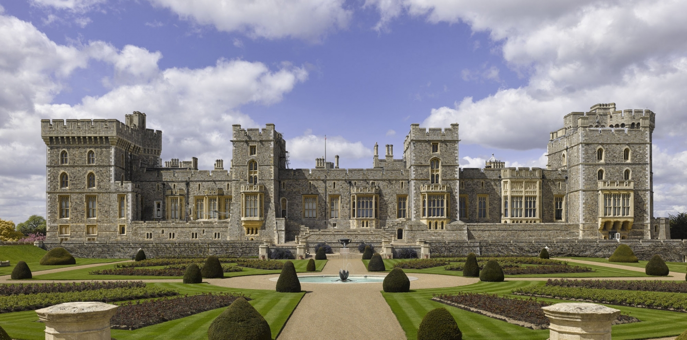

Europe is known for its many royal families. Some of the best tourist sites in the countries re to the palaces, castles and estates. If you are looking for the best palaces and castles to go to, look no further. I have put together a great collection of castles and palaces to visit for your next trip to Europe. I have narrowed down my selections to Great Britian, France, and two lesser known royal families, Denmark and Portugal. I have been to all the palaces except the British ones, but don't fear, I have done an extensive amount of reasearch on them. I hope you enjoy my selections and use my suggestions fo your next trip to Europe!
